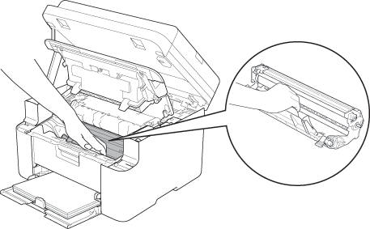

Toner mancante
Installare la cartuccia toner nella posizione corretta
1
Aprire i coperchi.
2
Estrarre dall'apparecchio l'unità tamburo.

3
Inserire saldamente la cartuccia toner nell'unità tamburo.
4
Reinserire il gruppo tamburo nell'apparecchio e chiudere i coperchi.